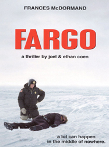
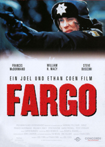
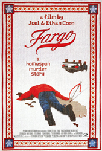
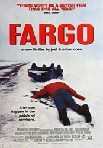
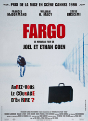

William H. Macy
Sally Wingert
Steve Buscemi
Peter Stormare
Harve Presnell
Kristin Rudrüd
Tony Denman
Larry Brandenburg
Steve Reevis
Larissa Kokernot
Melissa Peterman
Frances McDormand
John Carroll Lynch
Warren Keith
Steve Park
Bain Boehlke
José Feliciano
Roger Deakins
Jerry Lundegaard works in his father-in-law's car dealership but now has financial problems. He tries various schemes to come up with the money needed and it has to be assumed that his huge embezzlement of money from the dealership is about to be discovered by father-in-law. When all else falls through, plans he arranged earlier for two men to kidnap his wife for ransom to be paid by her wealthy father (who doesn't care much for his son-in-law) are set in motion. From the moment of the kidnapping, things go wrong and what was supposed to be a non-violent affair turns bloody with more blood added by the minute. Jerry is upset at the bloodshed, which turns loose a pregnant sheriff from Brainerd, MN who is tenacious in attempting to solve the three murders in her jurisdiction.
The Coens initially considered William H. Macy for a smaller role, but they were so impressed by his reading that they asked him to come back in and read for the role of Jerry.
At first, Frances McDormand was excited about working with the Coens, but was rather surprised when she found out that they wrote Marge for her. McDormand felt that what separated Marge from other female characters written by the Coens is that the latter fell short. She learned how to use and fire a gun, spent days talking with a pregnant police officer and developed a backstory for her character along with John Carroll Lynch. After seeing the movie, McDormand noted that much of Marge was modelled on her sister Dorothy who is a Disciples of Christ minister and chaplain.
While none of Fargo was actually filmed in Fargo, the Fargo-Moorhead Convention & Visitors Bureau exhibits original script copies and several props used in the film, including the wood chipper prop. After the movie's release, by some accounts, Brainerd was invaded by shovel-toting moviegoers searching for the buried ransom cash, inspired by the spurious "based-on-a-true-story" announcement in the opening credits. In 2001, a Japanese woman named Takako Konishi was found frozen to death near Detroit Lakes, Minnesota. A rumour emerged that she had been searching for the buried money, but her death was actually ruled a suicide.




